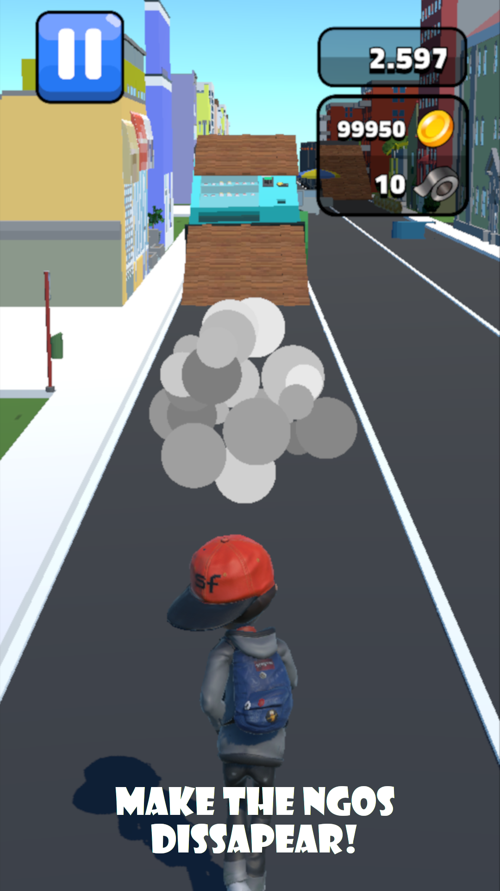

A page about my projects
FlexSim simulation

As part of my master's degree in industrial engineering at MCI, a simulation study was carried out to optimize material supply in a production environment. The previous material flow took place via a dedicated tugger train, which exclusively supplied a specific assembly area in separate tours. The aim of the study was to analyze whether a flexible, schematic delivery system that supplies several assembly areas in one tour can achieve equivalent or higher efficiency.
Key performance indicators such as throughput time, distance traveled, downtimes and the number of successful material deliveries were used for the evaluation. The analysis showed that the schematic tour system enables a more efficient material supply, which means that the objective of the study was successfully achieved.
Bachelor's thesis route optimization project
I developed this route optimization solution to efficiently plan and streamline service routes using OpenRouteService. The system intelligently calculates routes optimized for time, distance, and vehicle-specific requirements while considering operational constraints such as daily driving limits and custom routing parameters. By seamlessly integrating with OpenRouteService, it ensures real-world accuracy and enhances logistics efficiency. This project is all about making route planning smarter and more effective.
NGO Runner
With a group of friends we created a Subway Surfers-clone with Unity and published it to Google Play. My primary responsibility within the team was managing the project, which I handled through Jira, ensuring that tasks were well-organized, deadlines were met, and communication between team members was smooth. In addition to my project management role, I played a key part in the development of various game mechanics and sound features. This included implementing core game functions, such as the interaction with collectible items (e.g., picking up coins), as well as managing the sound effects, which would change or trigger in response to certain in-game actions and events. Furthermore, I was tasked with composing, arranging, and recording the game's music, ensuring that it fit the overall atmosphere and tone of the game. I also created the pause screen music, aiming for a sound that complemented the gameplay and provided a seamless experience for players during breaks. Throughout the project, I collaborated closely with the rest of the team, providing support where needed and contributing to the overall success of the game’s development and launch.
Even more projects!
You can find more of my smaller projects from university and personal time in my GitHub repositories.